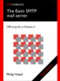

Latest Version: 4.100
Exim is a message transfer agent (MTA) originally developed at the University of Cambridge for use on Unix systems connected to the Internet. It is freely available under the terms of the GNU General Public Licence. In style it is similar to Smail 3, but its facilities are more general. There is a great deal of flexibility in the way mail can be routed, and there are extensive facilities for checking incoming mail. Exim can be installed in place of Sendmail, although the configuration of Exim is quite different.
All versions of Exim previous to version 4.100 are now obsolete. The last 3.x release was 3.36. It is twenty years obsolete and should not be used.
The current version is 4.100.
If necessary, we publish maintenance releases. These releases are mainly intended for package maintainers.
There may be beta versions available from the ftp sites in the Testing directory. Many people are using these without problems, but they are not recommended unless you are willing to work with beta software.

- Mythic Beasts provide us with a VM for running the buildfarm, for the testsuite.
- MacStadium provide us a Mac Mini for our buildfarm.
- Schlittermann - Internet & Unix Support provide us resources for hosting and administering the exim.org infrastructure.